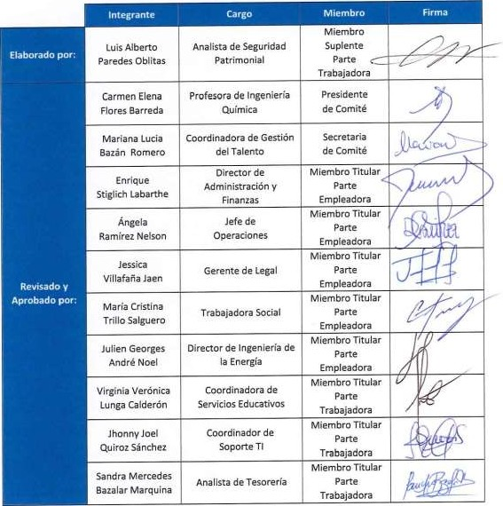

| N° | Documento | Leído |
|---|
PROCEDIMIENTO DE RESPUESTA ANTE ACCIDENTES
|  |
1. OBJETIVO
Asegurar una atención médica efectiva y eficaz con el fin de minimizar las consecuencias de emergencias con lesión personal a todos los colaboradores, alumnos, visitantes.
2. ALCANCE
A toda la comunidad universitaria, contratistas y visitantes.
3. REFERENCIAS
§ Reglamento Interno de seguridad y salud en el trabajo de UTEC.
§ Norma G.050: Seguridad durante la construcción.
§ Ley N° 29783, Ley de Seguridad y Salud en el Trabajo.
§ D.S. N° 005-2012-TR: Reglamento de la Ley N° 29783, Ley de Seguridad y Salud en el Trabajo.
§ Ley N° 26790 “Ley de la Modernización de la Seguridad Social”
§ Ley 18846 “Ley de Accidentes de trabajo y Enfermedades Profesionales”
§ D.S 032-89-TR “Reglamento de Ley de Accidentes de trabajo y Enfermedades Profesionales”
4. RESPONSABILIDADES
4.1. Directores, Gerentes, Jefes:
§ Asegurar el cumplimiento de lo dispuesto en el presente documento.
§ Analizar la condición del escenario presentado a fin de determinar las soluciones pertinentes para la protección de las personas.
§ Participar en las labores de atención de primeros auxilios.
§ Recabar y anotar toda la información de la emergencia.
§ Realizar las comunicaciones oportunamente durante la emergencia.
§ Brindar la atención médica de heridos durante la emergencia.
§ Coordinar el traslado de heridos al centro hospitalario más cercano.
§ Cumplir con lo dispuesto en el presente documento.
5. DEFINICIONES
§ Comunidad universitaria: Grupo de personas integrada por alumnos, docentes y administrativos.
§ Accidente de trabajo: Todo suceso repentino que sobrevenga por causa o con ocasión de trabajo y que produzca en el trabajador una lesión orgánica, una perturbación funcional, una invalidez o la muerte. Es también accidente de trabajo el que se produce durante la ejecución de órdenes del empleador, o durante la ejecución de una labor bajo su autoridad y aun fuera del lugar y horas de trabajo.
Según su gravedad los accidentes de trabajo pueden ser:
a) Accidente Leve: Suceso cuya lesión, resultado de la evaluación médica, que genera en el accidentado un descanso breve con retorno máximo al día siguiente a sus labores habituales.
b) Accidente Incapacitante: Suceso cuya lesión, resultado de la evaluación médica, da a lugar a descanso, ausencia justificada al trabajo y tratamiento. Según el grado de incapacidad los accidentes de trabajo pueden ser:
- Total temporal: Cuando la lesión genera en el accidentado la imposibilidad de utilizar su organismo; se otorgará tratamiento médico hasta su plena recuperación.
- Parcial Permanente: Cuando la lesión genera la pérdida parcial de un miembro u órgano de las funciones del mismo.
- Total Permanente: Cuando la lesión genera la perdida anatómica o funcional total de un miembro u órgano, o de las funciones del mismo. Se considera a partir del dedo meñique.
c) Accidente Mortal: Sucesos cuyas lesiones producen la muerte del trabajador.
§ Enfermedad profesional: Es una enfermedad contraída como resultado de la exposición a factores de riesgo relacionados al trabajo.
§ Emergencia: Evento o suceso grave que surge debido a factores naturales o como consecuencias de riesgos y procesos peligrosos en el trabajo que no fueron considerados en la gestión de seguridad y salud en el trabajo.
§ Incidente: Suceso acaecido en el transcurso del trabajo o en relación con el trabajo, en el que la persona afectada no sufre lesiones corporales o en el que estas solo requieren cuidados de primeros auxilios.
§ Incidente peligroso: Todo suceso potencialmente riesgoso que pudiera causar lesiones o enfermedades a las personas en su trabajo o a la población.
§ Primeros auxilios: Protocolos de atención de emergencia a una persona en el trabajo a una persona que ha sufrido un accidente o enfermedad ocupacional.
§ Áreas operativas actualmente empleadas: Utec Garage, laboratorios de ingeniería
§ Esguince: Es la separación momentánea de las superficies articulares con estiramiento de los ligamentos.
§ Luxación: desplazamiento de los huesos de una articulación.
§ Fractura: Rotura total o parcial de un hueso.
6. GENERALIDADES
a) Ante un accidente se deberá activar la emergencia actuando de inmediato, empleando los siguientes medios:
- Llamando al anexo 4120 (centro de control).
- Comunicando al personal de seguridad.
- Empleando la estación manual contra incendio.
- A viva voz.
b) También es muy importante informar correctamente, dando los datos necesarios sobre la emergencia. La persona que reporta debe de considerar los siguientes datos:
- Nombre completo (identificarse).
- Clasificar la emergencia o reportar el evento (indicar que pasa).
- Lugar de la emergencia (explicar un punto de referencia).
- Describir la escena del incidente (atención médica, incendio, corto circuito)
- Reportar la presencia de heridos.
c) Adicionalmente podrá considerar:
- Solicitar recursos (brigadas, apoyo externo, etc.).
- Capacidad de iluminación en el área (si es un ambiente cerrado o noche).
- Vías de acceso (detallar por donde es mejor llegar a la emergencia).
d) Para turnos nocturnos, el personal de seguridad atenderá de forma inmediata la emergencia y de ser necesario, a través del centro de control (anexo 4120) se coordinará el traslado del accidentado a una clínica o el arribo de la ambulancia.
7. DESARROLLO
7.1. Accidentes con insumos químicos:
§ Salpicadura de producto químico en los ojos
a) Si se trata de un insumo químico irritante o corrosivo es imprescindible irrigar el ojo con abundante agua durante al menos 15 minutos.
b) Si se usan lentes de contacto (uso no permitido en el laboratorio), estos deben retirarse siempre que no se encuentren pegados a los ojos.
c) Se deberá seguir las indicaciones de la hoja de seguridad (MSDS) del producto para el contacto con los ojos.
a) Se procederá al lavado de la zona afectada con abundante agua.
b) En el caso que el producto pueda ocasionar quemaduras, no se deberá quitar la prenda, ni emplear productos químicos sobre ella (ejemplo pasta dental, aceites).
c) Se deberá seguir las indicaciones de la hoja de seguridad (MSDS) del producto para el contacto con la piel (en algunos casos pueda que no sea recomendado el uso de agua para el lavado).
a) Se suministrará en la medida de lo posible aire limpio y se mantendrá a la persona afectada en total reposo.
b) Si la sustancia es irritante o corrosiva, pudiendo provocar problemas respiratorios graves, se colocará a la persona afectada semi incorporada.
c) Se deberá seguir las indicaciones de la hoja de seguridad (MSDS) descritas para el producto para los casos de inhalación.
Si la persona está consciente:
a) Se deberá seguir las indicaciones de la hoja de seguridad (MSDS) en relación al producto ingerido.
b) Provocar el vómito en el caso de productos tóxicos por ingestión.
c) No provocar el vómito en el caso de sustancias corrosivas o volátiles.
d) Enjuagar la boca con abundante agua.
Si la personal no está consciente, contactar inmediatamente con el Centro de Control (anexo 4120).
a) Atender a las personas afectadas.
b) Evaluar el alcance del derrame e identificar el producto vertido a fin de consultar su hoja de seguridad (MSDS).
c) Controlar el derrame y limitar el número de personas en la zona afectada hasta normalizar la situación. Esta actividad, deberá realizarse de manera rápida, eficiente y apropiada para la neutralización, absorción y eliminación del vertido.
d) Las labores de limpieza deberán realizarse con los equipos de protección adecuados, teniendo en cuenta el tipo de sustancia.
e) Se procurará ventilar la zona afectada. Para conseguir una actuación rápida el material absorbente a utilizar deberá estar ubicado en un lugar de fácil acceso.
f) Si el vertido es sólido, se procederá a recogerlo con cepillo y depositarlo en un contenedor de seguridad adecuado.
g) En el caso que sea líquido, de forma general, previa consulta con la hoja de seguridad (MSDS) y no disponiendo de un método específico, se recomienda su absorción con absorbente de probada eficacia y continuación aplicarle el procedimiento de eliminación recomendado.
§ Heridas
a) Lave la herida con abundante agua y jabón o suero fisiológico.
b) Usar gasas limpias más antiséptico y limpiar la herida desde el centro hacia el exterior.
c) Cubrir con gasa estéril y sujetar con esparadrapo.
a) Coloque a la víctima en una posición cómoda.
b) Emplear guantes quirúrgicos.
c) Aplicar compresión directa con la mano o con un vendaje.
d) Si la hemorragia continúa y la sangre se filtra a través de la gasa, no quite el vendaje, añada más material absorbente encima.
e) Trate de levantar la zona afectada.
a) Determinar la gravedad de la contusión, discriminando la posibilidad de fractura para no movilizar el miembro o área afectada. Si la contusión es leve continuar con la atención.
b) Aplicación de agentes fríos (compresas o hielo).
c) Reposar la zona afectada.
a) Aplique agua fría (no helada) sobre la lesión.
b) No utilice cremas, pomadas ni remedios caseros.
c) Si existen ampollas, no las reviente.
d) Cubra el área con una gasa o tela limpia.
a) No mover a la víctima si no es absolutamente necesario.
b) Retirar inmediatamente relojes, anillos o pulseras.
c) No tratar de mover el hueso roto.
d) Si hay hemorragia cohibirla con presión indirecta y cubrir con gasa.
e) Inmovilizar la fractura en la posición en que se encuentra.
a) Mantener ventilada y fresca a la víctima.
b) Levantar las piernas y colocarlas sobre una superficie elevada.
c) Si no puede tumbarse al suelo la sentaremos con la cabeza en las rodillas.
d) Si hubiese vomitado, la colocaremos de costado para evitar que se ahogue.
e) No proporcionarle líquidos ni alimentos.
a) Colocarse detrás de la víctima rodeándola con los brazos.
b) Abrazar por detrás empuñando entre la boca del estómago y el abdomen.
c) Realizar presiones hacia arriba en forma rápida y continua.
(*) Si la víctima se encuentra sola deberá colocarse por detrás de una silla y hará presión sobre el respaldar de la misma agachándose hacia delante de forma rápida y continua.
a) Voltear a la persona de lado para evitar que el vómito sea inhalado hacia los pulmones.
b) Acompañe a la persona hasta que llegue la ayuda.
c) Colocar un almohada o manta doblada bajo la cabeza para que no se lastime.
d) Quitarle gafas, aflojare cinturón, corbatas y prendas que aprieten.
e) Retirarle objetos punzantes.
f) No introducir objetos en su boca ni intentar darle medicamentos orales.
g) No sujetarlo con fuerza para evitar sus movimientos.
a) La coordinación del traslado del accidentado a un centro hospitalario estará a cargo del médico del tópico de acuerdo a sus procedimientos de atención. Asimismo, para los casos de accidentes de trabajadores deberá comunicar al área de RR.HH (anexo 4612) y para los casos de alumnos al área de Servicios Educativos (anexo 4207).
b) Todo personal accidentado evacuado a un centro hospitalario deberá portar su DNI y su formulario de solicitud de atención por accidente. Asimismo, deberá ser trasladado en una ambulancia que cuente obligatoriamente con un médico, así como también con algún representante de UTEC.
c) Para los casos de contratistas se comunicará al responsable inmediato a fin de que realice las coordinaciones pertinentes de traslado de su trabajador a un centro hospitalario.
a) En caso de un accidente grave, se solicitará al presidente del Comité de Seguridad y Salud en el Trabajo de UTEC una reunión extraordinaria del Comité a fin de determinar las causas del accidente y establecer las medidas correctivas correspondientes.
b) De acuerdo a la gravedad del accidente, se elaborará el informe final de investigación de accidentes que establecerá fechas para el cumplimiento de acciones correctivas, las cuales serán firmadas por el personal involucrado y responsables de las medidas correctivas.
a) Los accidentes de trabajo fuera de la instalación se deberán comunicar al centro de control: (01) 230-5020 anexo 4120. Estos a su vez comunicarán inmediatamente la novedad a RR.HH (anexo 4612) o al número: 966252767.
b) El trabajador afectado deberá dirigirse al centro de atención hospitalario asignado para ser atendido. De no ser posible, debe concurrir al establecimiento de salud más cercano del lugar del accidente para recibir atención correspondiente.
c) Para casos de accidentes de tránsito, el trabajador afectado deberá atenderse en el centro hospitalario según la póliza SOAT del vehículo siniestrado.
No son considerados accidentes de trabajo, los siguientes sucesos:
§ Accidentes que se produzcan en el trayecto de ida y retorno al centro de trabajo, aunque el transporte sea realizado por cuenta de UTEC en vehículos propios contratados para tal efecto.
§ El que se produzca como consecuencia del incumplimiento del trabajador de una orden escrita específica impartida por UTEC.
§ Los que se produzcan como consecuencias del uso de sustancias alcohólicas o estupefacientes por parte del trabajador.
§ El provocado intencionalmente por el propio trabajador o por su participación en riñas y peleas u otra acción ilegal.
§ El que se produzca con ocasión de actividades recreativas, deportivas o culturales, aunque se produzcan dentro de la jornada laboral o en el centro de trabajo.
§ El que sobrevenga durante los permisos, licencias, vacaciones o cualquier otra forma de suspensión del contrato de trabajo.
§ Los que se produzcan por efecto de terremoto, maremoto, etc., o cualquier otra convulsión de la naturaleza.
§ Los que se produzcan en caso de guerra civil o internacional, declarada o no, dentro o fuera del Perú; motín conmoción contra el orden público o terrorismo.
5. REGISTROS
Ninguno.
6. CONTROL DE CAMBIOS
|
Versión: |
Fecha: |
Descripción del cambio |
|
01 |
14/03/2019 |
Documento nuevo |
7. ANEXOS
Ninguno.